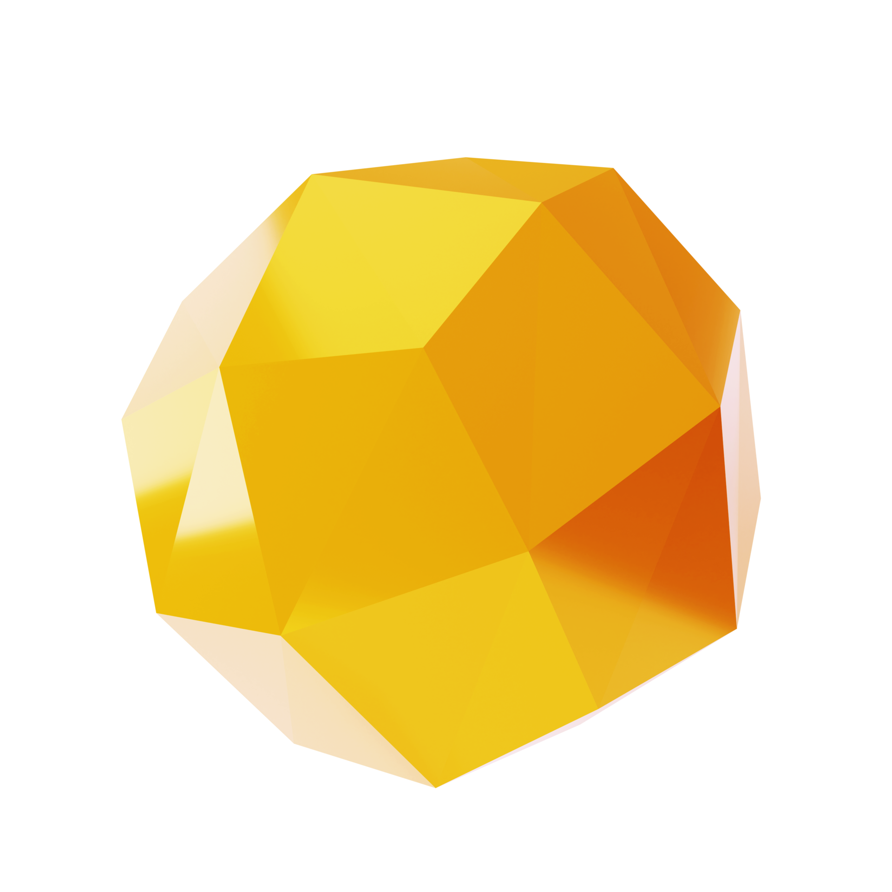

Kyle Fink
Explore

My name is Kyle Fink — welcome to my site! I'm a fifth-year Computer Science student at Grand Valley State University. I grew up in the small town of Bear Lake, Michigan, where opportunities were limited, which taught me to make the most of every chance to learn and get involved.
In high school I was a member of the National Honor Society and the National Technical Honor Society, and I earned my Eagle Scout rank through Boy Scouts of America, Troop 106, in 2019. I played several sports — cross country, golf, basketball, and football — and competed on our FIRST Robotics team. I stayed active in the community as well: handing out water and medals to runners at the annual Bayshore Marathon in Traverse City, selling tickets and running concession stands at ball games, and helping set up and clean up after school events.
I interned at GE Aerospace's Muskegon plants during the summer of 2024. There I sharpened my SQL skills on real production data, working through queries I had never encountered and learning how they behaved. I used Oracle APEX for web development, gathered feedback directly from a customer, and iterated on the program I was building based on their input. I also handled hands-on IT work — repairing computers and desk phones, setting up printers, working with IDFs, and resolving support tickets from a central IT help desk line.
C# was my first exposure to coding. I took an Intro to C# class at Northwestern Michigan College in Traverse City, where my professor, John Velis, made programming genuinely fun — fun enough that I later made Computer Science my major. Pursuing this degree pushed me to pick up many other languages, some obscure and some widely used. Below are a few of the better-known ones and how I've used them.
C# was the first language I ever learned. As the projects grew, I built a small ATM app that let you create an account and password and required a login before withdrawing or depositing. In the advanced course we programmed "Finch" robots — wheeled bots packed with sensors that could move and make noise — and my final project was a text-based, Star Wars–themed quest game where players travel between planets, interact with and fight NPCs, and collect parts to build a lightsaber.
When I transferred to Grand Valley State University, my first courses were the intro Java sequence. Because C# and Java are so similar, the transition was smooth. In the advanced class I built a Tic-Tac-Toe game with a configurable board (3x3 up to 15x15) and a configurable win length, then added a CPU opponent that actively tried to block you. The finished AI was satisfyingly tough to beat.
SQL has always felt fun to me and connects to almost everything. My first SQL class at NMC had us design a multi-table database and query made-up data. At GVSU I revisited databases in more depth, focusing on writing the queries that pull data out. Then, during my summer 2024 internship at GE Aerospace, SQL was my primary tool — the real-world experience grew my knowledge of the language enormously.
I've taken a web development class focused on HTML5 and CSS, and my creativity took off with all the possibilities. I started with a very basic page, kept experimenting, and eventually built this site. It began as a template I customized for a Computer Graphics class to publish my work, and that's when I had the idea to grow it into the portfolio you're reading now.
Python is a language I'm still growing into. A year after I learned Java at GVSU, the department switched its courses to Python, so I taught myself to keep pace. Along the way I've implemented search algorithms and built a local server that communicates with a web server.
JavaScript powers the interactive pieces of this very site. Every WebGL project from my Computer Graphics class — the rotating triangles, the Sierpinski gasket, and the animation demos — was written in JavaScript, and the parallax scrolling on this page's landing section is driven by it too. It's the language that first showed me how code and visuals come together in the browser.
I'm always open to connecting about opportunities, projects, or just talking shop. The quickest way to reach me is by email, and you can find more of my work through the links below.